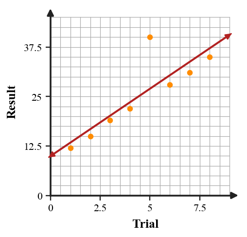

Start with what you can solve independently. Then find different classmates to compare reasoning or help with problems you have not completed. Record your own work and have each partner initial one problem they discussed with you.
Identify the two binomial factors in $(x-2)(x+4)$.
Simplify $(3x^2+4x-7)+(2x^2-9x+5)$.
A student simplifies $(4x^2+3x-2)-(x^2-5x+6)$ as $3x^2-2x+4$. Critique the error and write the correct simplified expression.
A student models a rectangular garden with area $(x+4)(x-6)$ but the context says both side lengths must be positive. Revise the model or context so the expression and situation make sense together.
Performance notes: Evaluate operation choice, equivalent forms, and whether the expression structure matches the context or area model.
For a linear rule, what value of $x$ usually reveals the starting value in a table?
Rewrite “start at $15$ and add $2$ each day” as a slope-intercept equation using $d$ for days and $T$ for total.
Relationship A has slope $3$. Relationship B has slope $-5$. Which relationship changes faster in magnitude?
The scatter plot shows trial results with one possible outlier. Identify the outlier and explain how it might affect a line of fit.

A linear model for delivery time is $T=4.2d+8$, where $d$ is miles. Predict the time for $15$ miles and interpret the intercept.
| Practice days | 1 | 2 | 3 | 4 | 5 |
|---|---|---|---|---|---|
| Free throws made | 11 | 14 | 15 | 19 | 22 |
Draw a reasonable line of fit on the blank scatter plot axes, write an approximate model, and use it to predict day $8$.

A graph of $y=4$ and a graph of $x=4$ are both described as “lines with a $4$.” Analyze the structure of each equation and explain why one is horizontal and one is vertical.
Design a small data set of six points that could be modeled by a line with positive slope near $4$. Include one point that is slightly above the trend and one below it, then write a reasonable line of fit.
For $a=b+9$, what expression can replace $a$ in a second equation?
Solve by substitution. State whether the result is one solution, no solution, or infinitely many solutions.
$$\begin{aligned}y=4x-6\\8x-2y=12\end{aligned}$$
Construct a graphing strategy for $4x-2y\le 10$.

Your strategy must include rewriting the boundary, deciding solid or dashed, selecting a test point, and deciding the shaded side.
A poster claims to model “students need at least 20 total practice problems, with $x$ online problems and $y$ paper problems” using $x+y\lt 20$ and a dashed boundary.
- Revise the inequality so it matches the phrase “at least.”
- Describe the correct boundary and shading.
- Give one point that should be feasible and one point that should not.